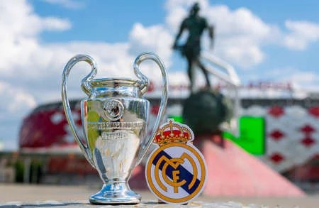

Welcome to my favorite sports team!! Hala Madrid
Since the age of 15, I am a hardcore real madrid supporter. I started following real madrid because of Cristiano Ronaldo. Real Madrid has a very rich history and the only team to win the Champions League 5 times in a row from 1955-1960. It is also the only team with 14 UEFA champions League Trophies.
